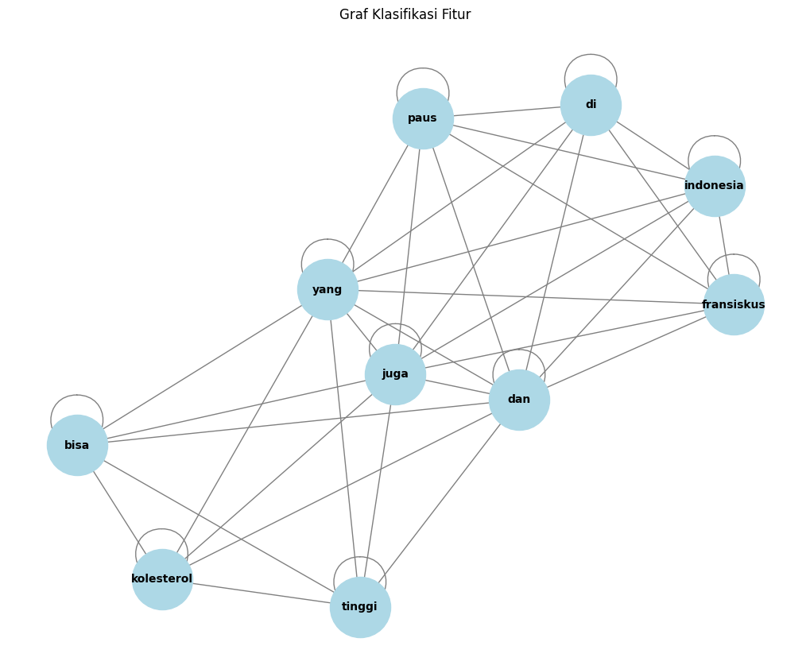

Tugas 4 : Centrality#
Ke 1 : Hubungan antar 2 berita#
from google.colab import files
# Upload file dari komputer
uploaded_preprosessing = files.upload()
---------------------------------------------------------------------------
KeyboardInterrupt Traceback (most recent call last)
<ipython-input-1-a72b7e0c6bf1> in <cell line: 4>()
2
3 # Upload file dari komputer
----> 4 uploaded_preprosessing = files.upload()
/usr/local/lib/python3.10/dist-packages/google/colab/files.py in upload(target_dir)
70 """
71
---> 72 uploaded_files = _upload_files(multiple=True)
73 # Mapping from original filename to filename as saved locally.
74 local_filenames = dict()
/usr/local/lib/python3.10/dist-packages/google/colab/files.py in _upload_files(multiple)
162
163 # First result is always an indication that the file picker has completed.
--> 164 result = _output.eval_js(
165 'google.colab._files._uploadFiles("{input_id}", "{output_id}")'.format(
166 input_id=input_id, output_id=output_id
/usr/local/lib/python3.10/dist-packages/google/colab/output/_js.py in eval_js(script, ignore_result, timeout_sec)
38 if ignore_result:
39 return
---> 40 return _message.read_reply_from_input(request_id, timeout_sec)
41
42
/usr/local/lib/python3.10/dist-packages/google/colab/_message.py in read_reply_from_input(message_id, timeout_sec)
94 reply = _read_next_input_message()
95 if reply == _NOT_READY or not isinstance(reply, dict):
---> 96 time.sleep(0.025)
97 continue
98 if (
KeyboardInterrupt:
import pandas as pd
import io
# Membaca file CSV yang diunggah dan menyimpannya ke dalam DataFrame dengan variabel df_trans
df = pd.read_csv(io.BytesIO(uploaded_preprosessing['Data 2 dokumen dengan perbedaan kelas.csv']))
df
| judul | tanggal | isi | kategori | cleaned_text | norm_text | token_text | swremove_text | clean_text | kategori_encoded | |
|---|---|---|---|---|---|---|---|---|---|---|
| 0 | Badan Kurus Tak Berarti Bebas dari Kolesterol ... | Kamis, 05 Sep 2024 11:03 WIB | Jakarta - Tak sedikit yang beranggapan bahwa o... | Kesehatan | Jakarta Tak sedikit yang beranggapan bahwa ora... | jakarta tidak sedikit yang beranggapan bahwa o... | ['jakarta', 'tidak', 'sedikit', 'yang', 'beran... | ['jakarta', 'sedikit', 'beranggapan', 'orang',... | jakarta sedikit beranggapan orang berbadan kur... | 0 |
| 1 | Paus Fransiskus Tak Mau Bermewah-mewah di Jaka... | Kamis, 05 Sep 2024 09:40 WIB | Jakarta - Pemimpin Tertinggi Gereja Katolik Se... | Pariwisata | Jakarta Pemimpin Tertinggi Gereja Katolik Sedu... | jakarta pemimpin tertinggi gereja katolik sedu... | ['jakarta', 'pemimpin', 'tertinggi', 'gereja',... | ['jakarta', 'pemimpin', 'tertinggi', 'gereja',... | jakarta pemimpin tertinggi gereja katolik sedu... | 1 |
# Menghitung TF-IDF
tfidf_vectorizer = TfidfVectorizer()
tfidf_matrix = tfidf_vectorizer.fit_transform(df['cleaned_text'])
# Mengambil nama fitur (kata) dari TF-IDF
feature_names = tfidf_vectorizer.get_feature_names_out()
# Menghitung skor TF-IDF untuk setiap fitur
tfidf_scores = tfidf_matrix.toarray()
df_tfidf_scores = pd.DataFrame(tfidf_scores, columns=feature_names)
# Mengurutkan DataFrame berdasarkan skor TF-IDF dari terbesar ke terkecil
df_top_features = df_tfidf_scores.sum(axis=0).reset_index()
df_top_features.columns = ['Feature', 'Score']
# Pastikan kolom 'Score' adalah tipe data numerik
df_top_features['Score'] = pd.to_numeric(df_top_features['Score'], errors='coerce')
# Mengurutkan berdasarkan skor
df_top_features = df_top_features.sort_values(by='Score', ascending=False)
# Mengambil 10 fitur terbaik
top_10_features = df_top_features.head(10)
# Menampilkan 10 fitur terbaik
print("10 Fitur Terbaik:\n", top_10_features)
10 Fitur Terbaik:
Feature Score
203 kolesterol 0.516764
295 paus 0.463128
431 yang 0.386871
96 di 0.354031
69 bisa 0.344509
86 dan 0.295992
120 fransiskus 0.292502
146 indonesia 0.268127
406 tinggi 0.262464
168 juga 0.251131
# Mengimpor library yang diperlukan
from sklearn.metrics.pairwise import cosine_similarity
# Mengambil hanya nama fitur dari 10 fitur teratas
top_10_feature_names = top_10_features['Feature'].values
# Mengambil indeks fitur di vocabulary
top_10_feature_indices = [tfidf_vectorizer.vocabulary_[feature] for feature in top_10_feature_names]
# Mengambil kolom TF-IDF untuk 10 fitur teratas
top_10_tfidf_matrix = tfidf_matrix[:, top_10_feature_indices]
# Menghitung cosine similarity
cosine_sim = cosine_similarity(top_10_tfidf_matrix.T)
# Mengubah hasil cosine similarity menjadi DataFrame untuk kemudahan analisis
cosine_sim_df = pd.DataFrame(cosine_sim, index=top_10_feature_names, columns=top_10_feature_names)
# Menampilkan cosine similarity
print("Cosine Similarity Matrix:\n", cosine_sim_df)
Cosine Similarity Matrix:
kolesterol paus yang di bisa dan \
kolesterol 1.000000 0.000000 0.716768 0.074183 1.000000 0.577119
paus 0.000000 1.000000 0.697312 0.997245 0.000000 0.816660
yang 0.716768 0.697312 1.000000 0.748563 0.716768 0.983127
di 0.074183 0.997245 0.748563 1.000000 0.074183 0.857222
bisa 1.000000 0.000000 0.716768 0.074183 1.000000 0.577119
dan 0.577119 0.816660 0.983127 0.857222 0.577119 1.000000
fransiskus 0.000000 1.000000 0.697312 0.997245 0.000000 0.816660
indonesia 0.000000 1.000000 0.697312 0.997245 0.000000 0.816660
tinggi 0.997506 0.070577 0.764194 0.144380 0.997506 0.633317
juga 0.816333 0.577582 0.987876 0.636548 0.816333 0.942809
fransiskus indonesia tinggi juga
kolesterol 0.000000 0.000000 0.997506 0.816333
paus 1.000000 1.000000 0.070577 0.577582
yang 0.697312 0.697312 0.764194 0.987876
di 0.997245 0.997245 0.144380 0.636548
bisa 0.000000 0.000000 0.997506 0.816333
dan 0.816660 0.816660 0.633317 0.942809
fransiskus 1.000000 1.000000 0.070577 0.577582
indonesia 1.000000 1.000000 0.070577 0.577582
tinggi 0.070577 0.070577 1.000000 0.855061
juga 0.577582 0.577582 0.855061 1.000000
# Menambahkan klasifikasi berdasarkan nilai cosine similarity
classification = (cosine_sim_df >= 0.5).astype(int)
# Menampilkan DataFrame klasifikasi
print("\nClassification Matrix:\n", classification)
Classification Matrix:
kolesterol paus yang di bisa dan fransiskus indonesia \
kolesterol 1 0 1 0 1 1 0 0
paus 0 1 1 1 0 1 1 1
yang 1 1 1 1 1 1 1 1
di 0 1 1 1 0 1 1 1
bisa 1 0 1 0 1 1 0 0
dan 1 1 1 1 1 1 1 1
fransiskus 0 1 1 1 0 1 1 1
indonesia 0 1 1 1 0 1 1 1
tinggi 1 0 1 0 1 1 0 0
juga 1 1 1 1 1 1 1 1
tinggi juga
kolesterol 1 1
paus 0 1
yang 1 1
di 0 1
bisa 1 1
dan 1 1
fransiskus 0 1
indonesia 0 1
tinggi 1 1
juga 1 1
import pandas as pd
import networkx as nx
# Asumsikan 'classification' adalah DataFrame yang sudah ada
# Membuat graf dari matriks klasifikasi
G = nx.from_pandas_adjacency(classification)
# Menghitung degree
degree = dict(G.degree())
# Menghitung closeness centrality
closeness = nx.closeness_centrality(G)
# Menghitung betweenness centrality
betweenness = nx.betweenness_centrality(G)
# Mengubah hasil menjadi DataFrame untuk ditampilkan secara vertikal
degree_df = pd.DataFrame(list(degree.items()), columns=['Node', 'Degree'])
closeness_df = pd.DataFrame(list(closeness.items()), columns=['Node', 'Closeness Centrality'])
betweenness_df = pd.DataFrame(list(betweenness.items()), columns=['Node', 'Betweenness Centrality'])
# Menampilkan hasil
print("\nDegree:\n", degree_df)
print("\nCloseness Centrality:\n", closeness_df)
print("\nBetweenness Centrality:\n", betweenness_df)
Degree:
Node Degree
0 kolesterol 7
1 paus 8
2 yang 11
3 di 8
4 bisa 7
5 dan 11
6 fransiskus 8
7 indonesia 8
8 tinggi 7
9 juga 11
Closeness Centrality:
Node Closeness Centrality
0 kolesterol 0.692308
1 paus 0.750000
2 yang 1.000000
3 di 0.750000
4 bisa 0.692308
5 dan 1.000000
6 fransiskus 0.750000
7 indonesia 0.750000
8 tinggi 0.692308
9 juga 1.000000
Betweenness Centrality:
Node Betweenness Centrality
0 kolesterol 0.000000
1 paus 0.000000
2 yang 0.111111
3 di 0.000000
4 bisa 0.000000
5 dan 0.111111
6 fransiskus 0.000000
7 indonesia 0.000000
8 tinggi 0.000000
9 juga 0.111111
import matplotlib.pyplot as plt
import networkx as nx
# Mengubah hasil cosine similarity menjadi DataFrame untuk kemudahan analisis
cosine_sim_df = pd.DataFrame(cosine_sim, index=top_10_feature_names, columns=top_10_feature_names)
# Menambahkan klasifikasi berdasarkan nilai cosine similarity
classification = (cosine_sim_df >= 0.5).astype(int)
# Membuat graf dari matriks klasifikasi
G = nx.from_pandas_adjacency(classification)
# Menggambar graf
plt.figure(figsize=(10, 8))
pos = nx.spring_layout(G) # Menggunakan spring layout untuk penempatan node
nx.draw(G, pos, with_labels=True, node_color='lightblue', edge_color='gray', node_size=3000, font_size=10, font_weight='bold')
plt.title("Graf Klasifikasi Fitur")
plt.show()

Ke 2 : 1 berita menjadi beberapa kalimat berdasarkan tanda titik#
from google.colab import files
# Upload file dari komputer
uploaded_preprosessing = files.upload()
Saving data 1 berita.csv to data 1 berita (1).csv
import pandas as pd
import io
# Membaca file CSV yang diunggah dan menyimpannya ke dalam DataFrame dengan variabel df_trans
df = pd.read_csv(io.BytesIO(uploaded_preprosessing['data 1 berita (1).csv']))
df.head(5) # Menampilkan 5 baris pertama dari DataFrame
| judul | tanggal | isi | kategori | cleaned_text | norm_text | token_text | swremove_text | clean_text | |
|---|---|---|---|---|---|---|---|---|---|
| 0 | Badan Kurus Tak Berarti Bebas dari Kolesterol ... | Kamis, 05 Sep 2024 11:03 WIB | Jakarta - Tak sedikit yang beranggapan bahwa o... | Kesehatan | Jakarta Tak sedikit yang beranggapan bahwa ora... | jakarta tidak sedikit yang beranggapan bahwa o... | ['jakarta', 'tidak', 'sedikit', 'yang', 'beran... | ['jakarta', 'sedikit', 'beranggapan', 'orang',... | jakarta sedikit beranggapan orang berbadan kur... |
# Membuat list untuk menyimpan hasil
result_list = []
# Looping untuk memisahkan kalimat dari setiap berita
for index, row in df.iterrows():
sentences = row['isi'].split('.') # Pisahkan kalimat berdasarkan titik
sentences = [s.strip() for s in sentences if s.strip()] # Hilangkan spasi berlebih dan kosong
for i, sentence in enumerate(sentences, 1):
result_list.append({'kalimat ke n': f"Kalimat ke {i}", 'kalimat': sentence})
# Membuat DataFrame dari hasil pemisahan
result_df = pd.DataFrame(result_list)
# Tampilkan DataFrame
result_df
| kalimat ke n | kalimat | |
|---|---|---|
| 0 | Kalimat ke 1 | Jakarta - Tak sedikit yang beranggapan bahwa o... |
| 1 | Kalimat ke 2 | Sebenarnya apakah anggapan hal tersebut benar ... |
| 2 | Kalimat ke 3 | Ia mengatakan sebenarnya ada banyak faktor yan... |
| 3 | Kalimat ke 4 | Selain pola makan buruk dan kurangnya olahraga... |
| 4 | Kalimat ke 5 | ADVERTISEMENT\r\n\n\n\n\n\n\n\n\n\n\n\n\n\n\n\... |
| 5 | Kalimat ke 6 | Sedangkan pada orang yang memiliki badan gemuk... |
| 6 | Kalimat ke 7 | Tidak hanya hipertensi, masalah obesitas juga ... |
| 7 | Kalimat ke 8 | Baca juga: Sederet Gejala Kolesterol Tinggi ya... |
| 8 | Kalimat ke 9 | "Ketika seseorang mengalami obese, itu bisa me... |
| 9 | Kalimat ke 10 | dr Aru kembali mengingatkan bahwa kolesterol t... |
| 10 | Kalimat ke 11 | Hal ini dapat berpengaruh pada semua orang, ti... |
| 11 | Kalimat ke 12 | Menurutnya, pola hidup yang sehat masih menjad... |
| 12 | Kalimat ke 13 | Jangan lupa juga untuk menjaga tingkat stres d... |
| 13 | Kalimat ke 14 | Baca juga: Sering Sakit di Bagian Belakang Kep... |
!pip install Sastrawi
Collecting Sastrawi
Downloading Sastrawi-1.0.1-py2.py3-none-any.whl.metadata (909 bytes)
Downloading Sastrawi-1.0.1-py2.py3-none-any.whl (209 kB)
209.7/209.7 kB 2.9 MB/s eta 0:00:00
?25hInstalling collected packages: Sastrawi
Successfully installed Sastrawi-1.0.1
import pandas as pd
import numpy as np
import re
import nltk
from nltk.corpus import stopwords
#stemming
from Sastrawi.Stemmer.StemmerFactory import StemmerFactory
from sklearn.feature_extraction.text import TfidfVectorizer
from sklearn.metrics.pairwise import cosine_similarity
import nltk
from nltk.tokenize import sent_tokenize
import networkx as nx
import matplotlib.pyplot as plt
# Download stopwords untuk bahasa Indonesia
nltk.download('stopwords')
stop_words = stopwords.words('indonesian')
# Fungsi preprocessing yang disesuaikan
def remove_url(data_berita):
url = re.compile(r'https?://\S+|www\.S+')
return url.sub(r'', data_berita)
def remove_html(data_berita):
html = re.compile(r'<.#?>')
return html.sub(r'', data_berita)
def remove_emoji(data_berita):
emoji_pattern = re.compile("["
u"\U0001F600-\U0001F64F" # emoticon
u"\U0001F300-\U0001F5FF" # symbols & pictographs
u"\U0001F680-\U0001F6FF" # transport & map symbols
u"\U0001F1E0-\U0001F1FF" # flags (iOS)
"]+", flags=re.UNICODE)
return emoji_pattern.sub(r'', data_berita)
def remove_numbers(data_berita):
data_berita = re.sub(r'\d+', '', data_berita)
return data_berita
def remove_symbols(data_berita):
data_berita = re.sub(r'[^a-zA-Z0-9\s]', '', data_berita)
return data_berita
def case_folding(text):
if isinstance(text, str):
return text.lower()
return text
def tokenize(text):
return text.split()
def remove_stopwords(text):
return [word for word in text if word not in stop_words]
# Inisialisasi stemmer
factory = StemmerFactory()
stemmer = factory.create_stemmer()
def stemming(text):
return [stemmer.stem(word) for word in text]
# Looping setiap kalimat di dataframe 'result_df'
result_df['clean'] = result_df['kalimat'].apply(remove_url)
result_df['clean'] = result_df['clean'].apply(remove_html)
result_df['clean'] = result_df['clean'].apply(remove_emoji)
result_df['clean'] = result_df['clean'].apply(remove_symbols)
result_df['clean'] = result_df['clean'].apply(remove_numbers)
result_df['clean'] = result_df['clean'].apply(case_folding)
result_df['tokenize'] = result_df['clean'].apply(tokenize)
result_df['stopword removal'] = result_df['tokenize'].apply(remove_stopwords)
result_df['stemming'] = result_df['stopword removal'].apply(stemming)
# Gabungkan kata setelah stemming
result_df['final'] = result_df['stemming'].apply(lambda x: ' '.join(x))
# Tampilkan hasil dataframe
result_df[['kalimat ke n', 'final']]
[nltk_data] Downloading package stopwords to /root/nltk_data...
[nltk_data] Unzipping corpora/stopwords.zip.
| kalimat ke n | final | |
|---|---|---|
| 0 | Kalimat ke 1 | jakarta anggap orang badan kurus bebas risiko ... |
| 1 | Kalimat ke 2 | anggap adanyaspesialis sakit dr aru ariadno sp... |
| 2 | Kalimat ke 3 | faktor kadar kolesterol tubuh |
| 3 | Kalimat ke 4 | pola makan buruk kurang olahraga faktor utama ... |
| 4 | Kalimat ke 5 | advertisement scroll to continue with content ... |
| 5 | Kalimat ke 6 | orang milik badan gemuk obesitas rentan kolest... |
| 6 | Kalimat ke 7 | hipertensi obesitas dampak sehat manusia tangan |
| 7 | Kalimat ke 8 | baca deret gejala kolesterol muncul priaselain... |
| 8 | Kalimat ke 9 | alami obese sebab sindrom metabolik diabetes k... |
| 9 | Kalimat ke 10 | dr aru kolesterol akibat pola makan buruk jara... |
| 10 | Kalimat ke 11 | pengaruh orang orang milik badan kurus gemuk |
| 11 | Kalimat ke 12 | turut pola hidup sehat kunci utama kelola kada... |
| 12 | Kalimat ke 13 | lupa jaga tingkat stres henti rokok bantu cega... |
| 13 | Kalimat ke 14 | baca sakit kepala tanda kolesterol dokter spes... |
# Gabungkan semua kalimat hasil stemming menjadi dokumen untuk tiap kalimat
documents = result_df['final'].tolist()
# Inisialisasi TF-IDF Vectorizer
tfidf_vectorizer = TfidfVectorizer()
# Terapkan TF-IDF ke dokumen (kalimat yang sudah dipreproses)
tfidf_matrix = tfidf_vectorizer.fit_transform(documents)
# Mendapatkan nama-nama fitur (kata-kata)
feature_names = tfidf_vectorizer.get_feature_names_out()
# Mengubah hasil TF-IDF menjadi dataframe
tfidf_df = pd.DataFrame(tfidf_matrix.toarray(), columns=feature_names)
# Tambahkan kolom 'no' dan 'kalimat ke n' untuk identifikasi
tfidf_df.insert(0, 'kalimat ke n', result_df['kalimat ke n'])
# Tampilkan dataframe dengan skor TF-IDF
tfidf_df
| kalimat ke n | adanyaspesialis | advertisement | akibat | aktivitas | alami | anggap | ariadno | aru | avksuc | ... | tanda | tangan | timbul | tinggi | tingkat | to | tubuh | turut | utama | with | |
|---|---|---|---|---|---|---|---|---|---|---|---|---|---|---|---|---|---|---|---|---|---|
| 0 | Kalimat ke 1 | 0.000000 | 0.000000 | 0.000000 | 0.000000 | 0.000000 | 0.276644 | 0.000000 | 0.000000 | 0.000000 | ... | 0.000000 | 0.000000 | 0.000000 | 0.000000 | 0.000000 | 0.000000 | 0.000000 | 0.000000 | 0.000000 | 0.000000 |
| 1 | Kalimat ke 2 | 0.360743 | 0.000000 | 0.000000 | 0.000000 | 0.000000 | 0.312227 | 0.360743 | 0.277805 | 0.000000 | ... | 0.000000 | 0.000000 | 0.000000 | 0.000000 | 0.000000 | 0.000000 | 0.000000 | 0.000000 | 0.000000 | 0.000000 |
| 2 | Kalimat ke 3 | 0.000000 | 0.000000 | 0.000000 | 0.000000 | 0.000000 | 0.000000 | 0.000000 | 0.000000 | 0.000000 | ... | 0.000000 | 0.000000 | 0.000000 | 0.000000 | 0.000000 | 0.000000 | 0.557303 | 0.000000 | 0.000000 | 0.000000 |
| 3 | Kalimat ke 4 | 0.000000 | 0.000000 | 0.000000 | 0.000000 | 0.000000 | 0.000000 | 0.000000 | 0.000000 | 0.000000 | ... | 0.000000 | 0.000000 | 0.000000 | 0.000000 | 0.000000 | 0.000000 | 0.000000 | 0.000000 | 0.292877 | 0.000000 |
| 4 | Kalimat ke 5 | 0.000000 | 0.240342 | 0.000000 | 0.000000 | 0.208019 | 0.000000 | 0.000000 | 0.185086 | 0.000000 | ... | 0.000000 | 0.000000 | 0.000000 | 0.000000 | 0.000000 | 0.240342 | 0.000000 | 0.000000 | 0.000000 | 0.240342 |
| 5 | Kalimat ke 6 | 0.000000 | 0.000000 | 0.000000 | 0.000000 | 0.000000 | 0.000000 | 0.000000 | 0.000000 | 0.000000 | ... | 0.000000 | 0.000000 | 0.000000 | 0.000000 | 0.000000 | 0.000000 | 0.000000 | 0.000000 | 0.000000 | 0.000000 |
| 6 | Kalimat ke 7 | 0.000000 | 0.000000 | 0.000000 | 0.000000 | 0.000000 | 0.000000 | 0.000000 | 0.000000 | 0.000000 | ... | 0.000000 | 0.443187 | 0.000000 | 0.000000 | 0.000000 | 0.000000 | 0.000000 | 0.000000 | 0.000000 | 0.000000 |
| 7 | Kalimat ke 8 | 0.000000 | 0.000000 | 0.000000 | 0.233207 | 0.000000 | 0.000000 | 0.000000 | 0.000000 | 0.000000 | ... | 0.000000 | 0.000000 | 0.000000 | 0.233207 | 0.000000 | 0.000000 | 0.000000 | 0.000000 | 0.000000 | 0.000000 |
| 8 | Kalimat ke 9 | 0.000000 | 0.000000 | 0.000000 | 0.000000 | 0.348696 | 0.000000 | 0.000000 | 0.000000 | 0.000000 | ... | 0.000000 | 0.000000 | 0.000000 | 0.000000 | 0.000000 | 0.000000 | 0.000000 | 0.000000 | 0.000000 | 0.000000 |
| 9 | Kalimat ke 10 | 0.000000 | 0.000000 | 0.410773 | 0.000000 | 0.000000 | 0.000000 | 0.000000 | 0.316333 | 0.000000 | ... | 0.000000 | 0.000000 | 0.000000 | 0.000000 | 0.000000 | 0.000000 | 0.000000 | 0.000000 | 0.000000 | 0.000000 |
| 10 | Kalimat ke 11 | 0.000000 | 0.000000 | 0.000000 | 0.000000 | 0.000000 | 0.000000 | 0.000000 | 0.000000 | 0.000000 | ... | 0.000000 | 0.000000 | 0.000000 | 0.000000 | 0.000000 | 0.000000 | 0.000000 | 0.000000 | 0.000000 | 0.000000 |
| 11 | Kalimat ke 12 | 0.000000 | 0.000000 | 0.000000 | 0.000000 | 0.000000 | 0.000000 | 0.000000 | 0.000000 | 0.000000 | ... | 0.000000 | 0.000000 | 0.000000 | 0.000000 | 0.000000 | 0.000000 | 0.321696 | 0.371683 | 0.321696 | 0.000000 |
| 12 | Kalimat ke 13 | 0.000000 | 0.000000 | 0.000000 | 0.000000 | 0.000000 | 0.000000 | 0.000000 | 0.000000 | 0.000000 | ... | 0.000000 | 0.000000 | 0.334943 | 0.000000 | 0.334943 | 0.000000 | 0.000000 | 0.000000 | 0.000000 | 0.000000 |
| 13 | Kalimat ke 14 | 0.000000 | 0.000000 | 0.000000 | 0.000000 | 0.000000 | 0.000000 | 0.000000 | 0.000000 | 0.186074 | ... | 0.186074 | 0.000000 | 0.000000 | 0.000000 | 0.000000 | 0.000000 | 0.000000 | 0.000000 | 0.000000 | 0.000000 |
14 rows 92 columns
# Menghitung cosine similarity antar kalimat berdasarkan TF-IDF
cosine_sim = cosine_similarity(tfidf_matrix)
# Membuat dataframe untuk menyimpan hasil cosine similarity
cosine_sim_df = pd.DataFrame(cosine_sim, index=result_df['kalimat ke n'], columns=result_df['kalimat ke n'])
# Tampilkan matriks cosine similarity
cosine_sim_df
| kalimat ke n | Kalimat ke 1 | Kalimat ke 2 | Kalimat ke 3 | Kalimat ke 4 | Kalimat ke 5 | Kalimat ke 6 | Kalimat ke 7 | Kalimat ke 8 | Kalimat ke 9 | Kalimat ke 10 | Kalimat ke 11 | Kalimat ke 12 | Kalimat ke 13 | Kalimat ke 14 |
|---|---|---|---|---|---|---|---|---|---|---|---|---|---|---|
| kalimat ke n | ||||||||||||||
| Kalimat ke 1 | 1.000000 | 0.086376 | 0.067749 | 0.035604 | 0.162241 | 0.423803 | 0.000000 | 0.165141 | 0.042390 | 0.043220 | 0.551109 | 0.039107 | 0.035242 | 0.116029 |
| Kalimat ke 2 | 0.086376 | 1.000000 | 0.000000 | 0.000000 | 0.102836 | 0.000000 | 0.000000 | 0.000000 | 0.000000 | 0.175758 | 0.000000 | 0.000000 | 0.000000 | 0.050284 |
| Kalimat ke 3 | 0.067749 | 0.000000 | 1.000000 | 0.362304 | 0.050943 | 0.052059 | 0.000000 | 0.049431 | 0.042697 | 0.043534 | 0.000000 | 0.397956 | 0.035497 | 0.039441 |
| Kalimat ke 4 | 0.035604 | 0.000000 | 0.362304 | 1.000000 | 0.087696 | 0.027358 | 0.000000 | 0.170127 | 0.022438 | 0.380912 | 0.114306 | 0.175858 | 0.018655 | 0.020727 |
| Kalimat ke 5 | 0.162241 | 0.102836 | 0.050943 | 0.087696 | 1.000000 | 0.096066 | 0.000000 | 0.036901 | 0.104410 | 0.149597 | 0.157536 | 0.029406 | 0.026500 | 0.051112 |
| Kalimat ke 6 | 0.423803 | 0.000000 | 0.052059 | 0.027358 | 0.096066 | 1.000000 | 0.163081 | 0.083989 | 0.032573 | 0.033211 | 0.601427 | 0.030050 | 0.027080 | 0.067014 |
| Kalimat ke 7 | 0.000000 | 0.000000 | 0.000000 | 0.000000 | 0.000000 | 0.163081 | 1.000000 | 0.000000 | 0.133754 | 0.000000 | 0.000000 | 0.097689 | 0.000000 | 0.048906 |
| Kalimat ke 8 | 0.165141 | 0.000000 | 0.049431 | 0.170127 | 0.036901 | 0.083989 | 0.000000 | 1.000000 | 0.030928 | 0.134760 | 0.042484 | 0.070532 | 0.025713 | 0.078607 |
| Kalimat ke 9 | 0.042390 | 0.000000 | 0.042697 | 0.022438 | 0.104410 | 0.032573 | 0.133754 | 0.030928 | 1.000000 | 0.027238 | 0.000000 | 0.024646 | 0.022210 | 0.136992 |
| Kalimat ke 10 | 0.043220 | 0.175758 | 0.043534 | 0.380912 | 0.149597 | 0.033211 | 0.000000 | 0.134760 | 0.027238 | 1.000000 | 0.000000 | 0.099106 | 0.022645 | 0.025161 |
| Kalimat ke 11 | 0.551109 | 0.000000 | 0.000000 | 0.114306 | 0.157536 | 0.601427 | 0.000000 | 0.042484 | 0.000000 | 0.000000 | 1.000000 | 0.000000 | 0.000000 | 0.074553 |
| Kalimat ke 12 | 0.039107 | 0.000000 | 0.397956 | 0.175858 | 0.029406 | 0.030050 | 0.097689 | 0.070532 | 0.024646 | 0.099106 | 0.000000 | 1.000000 | 0.020490 | 0.115591 |
| Kalimat ke 13 | 0.035242 | 0.000000 | 0.035497 | 0.018655 | 0.026500 | 0.027080 | 0.000000 | 0.025713 | 0.022210 | 0.022645 | 0.000000 | 0.020490 | 1.000000 | 0.113892 |
| Kalimat ke 14 | 0.116029 | 0.050284 | 0.039441 | 0.020727 | 0.051112 | 0.067014 | 0.048906 | 0.078607 | 0.136992 | 0.025161 | 0.074553 | 0.115591 | 0.113892 | 1.000000 |
# Tetapkan ambang batas (threshold) 0.7
threshold = 0.5
# Buat matriks adjacency: jika cosine similarity >= 0.5, maka 1; jika tidak, maka 0
adjacency_matrix = np.where(cosine_sim >= threshold, 1, 0)
# Buat dataframe untuk menampilkan matriks adjacency
adjacency_df = pd.DataFrame(adjacency_matrix, index=result_df['kalimat ke n'], columns=result_df['kalimat ke n'])
# Tampilkan matriks adjacency
adjacency_df
| kalimat ke n | Kalimat ke 1 | Kalimat ke 2 | Kalimat ke 3 | Kalimat ke 4 | Kalimat ke 5 | Kalimat ke 6 | Kalimat ke 7 | Kalimat ke 8 | Kalimat ke 9 | Kalimat ke 10 | Kalimat ke 11 | Kalimat ke 12 | Kalimat ke 13 | Kalimat ke 14 |
|---|---|---|---|---|---|---|---|---|---|---|---|---|---|---|
| kalimat ke n | ||||||||||||||
| Kalimat ke 1 | 1 | 0 | 0 | 0 | 0 | 0 | 0 | 0 | 0 | 0 | 1 | 0 | 0 | 0 |
| Kalimat ke 2 | 0 | 1 | 0 | 0 | 0 | 0 | 0 | 0 | 0 | 0 | 0 | 0 | 0 | 0 |
| Kalimat ke 3 | 0 | 0 | 1 | 0 | 0 | 0 | 0 | 0 | 0 | 0 | 0 | 0 | 0 | 0 |
| Kalimat ke 4 | 0 | 0 | 0 | 1 | 0 | 0 | 0 | 0 | 0 | 0 | 0 | 0 | 0 | 0 |
| Kalimat ke 5 | 0 | 0 | 0 | 0 | 1 | 0 | 0 | 0 | 0 | 0 | 0 | 0 | 0 | 0 |
| Kalimat ke 6 | 0 | 0 | 0 | 0 | 0 | 1 | 0 | 0 | 0 | 0 | 1 | 0 | 0 | 0 |
| Kalimat ke 7 | 0 | 0 | 0 | 0 | 0 | 0 | 1 | 0 | 0 | 0 | 0 | 0 | 0 | 0 |
| Kalimat ke 8 | 0 | 0 | 0 | 0 | 0 | 0 | 0 | 1 | 0 | 0 | 0 | 0 | 0 | 0 |
| Kalimat ke 9 | 0 | 0 | 0 | 0 | 0 | 0 | 0 | 0 | 1 | 0 | 0 | 0 | 0 | 0 |
| Kalimat ke 10 | 0 | 0 | 0 | 0 | 0 | 0 | 0 | 0 | 0 | 1 | 0 | 0 | 0 | 0 |
| Kalimat ke 11 | 1 | 0 | 0 | 0 | 0 | 1 | 0 | 0 | 0 | 0 | 1 | 0 | 0 | 0 |
| Kalimat ke 12 | 0 | 0 | 0 | 0 | 0 | 0 | 0 | 0 | 0 | 0 | 0 | 1 | 0 | 0 |
| Kalimat ke 13 | 0 | 0 | 0 | 0 | 0 | 0 | 0 | 0 | 0 | 0 | 0 | 0 | 1 | 0 |
| Kalimat ke 14 | 0 | 0 | 0 | 0 | 0 | 0 | 0 | 0 | 0 | 0 | 0 | 0 | 0 | 1 |
# Buat graf dari matriks adjacency
G = nx.from_numpy_array(adjacency_matrix)
# Atur label node agar sesuai dengan 'kalimat ke n'
mapping = {i: f"Kalimat ke {i+1}" for i in range(len(result_df))}
G = nx.relabel_nodes(G, mapping)
# Menggambar graf
plt.figure(figsize=(10, 10))
pos = nx.spring_layout(G) # Atur layout graf
nx.draw(G, pos, with_labels=True, node_color='skyblue', node_size=2000, font_size=10, font_color='black', linewidths=1, font_weight='bold')
# Tampilkan graf
plt.title("Graph Based on Adjacency Matrix")
plt.show()
# Menghitung betweenness centrality
betweenness_centrality = nx.betweenness_centrality(G)
# Menghitung degree centrality
degree_centrality = nx.degree_centrality(G)
# Menghitung closeness centrality
closeness_centrality = nx.closeness_centrality(G)
# Buat dataframe untuk menampilkan hasil centrality
centrality_df = pd.DataFrame({
'Kalimat': list(betweenness_centrality.keys()),
'Betweenness Centrality': list(betweenness_centrality.values()),
'Degree Centrality': list(degree_centrality.values()),
'Closeness Centrality': list(closeness_centrality.values())
})
# Tampilkan dataframe centrality
centrality_df
| Kalimat | Betweenness Centrality | Degree Centrality | Closeness Centrality | |
|---|---|---|---|---|
| 0 | Kalimat ke 1 | 0.000000 | 0.230769 | 0.102564 |
| 1 | Kalimat ke 2 | 0.000000 | 0.153846 | 0.000000 |
| 2 | Kalimat ke 3 | 0.000000 | 0.153846 | 0.000000 |
| 3 | Kalimat ke 4 | 0.000000 | 0.153846 | 0.000000 |
| 4 | Kalimat ke 5 | 0.000000 | 0.153846 | 0.000000 |
| 5 | Kalimat ke 6 | 0.000000 | 0.230769 | 0.102564 |
| 6 | Kalimat ke 7 | 0.000000 | 0.153846 | 0.000000 |
| 7 | Kalimat ke 8 | 0.000000 | 0.153846 | 0.000000 |
| 8 | Kalimat ke 9 | 0.000000 | 0.153846 | 0.000000 |
| 9 | Kalimat ke 10 | 0.000000 | 0.153846 | 0.000000 |
| 10 | Kalimat ke 11 | 0.012821 | 0.307692 | 0.153846 |
| 11 | Kalimat ke 12 | 0.000000 | 0.153846 | 0.000000 |
| 12 | Kalimat ke 13 | 0.000000 | 0.153846 | 0.000000 |
| 13 | Kalimat ke 14 | 0.000000 | 0.153846 | 0.000000 |
Ke 3 : Fitur extraction dari semua dokumen#
from google.colab import files
# Upload file dari komputer
uploaded_preprosessing = files.upload()
Saving data_preprosessing.csv to data_preprosessing.csv
import pandas as pd
import io
# Membaca file CSV yang diunggah dan menyimpannya ke dalam DataFrame dengan variabel df_trans
df = pd.read_csv(io.BytesIO(uploaded_preprosessing['data_preprosessing.csv']))
df.head(5) # Menampilkan 5 baris pertama dari DataFrame
| judul | tanggal | isi | kategori | cleaned_text | norm_text | token_text | swremove_text | |
|---|---|---|---|---|---|---|---|---|
| 0 | Badan Kurus Tak Berarti Bebas dari Kolesterol ... | Kamis, 05 Sep 2024 11:03 WIB | Jakarta - Tak sedikit yang beranggapan bahwa o... | Kesehatan | Jakarta Tak sedikit yang beranggapan bahwa ora... | jakarta tidak sedikit yang beranggapan bahwa o... | ['jakarta', 'tidak', 'sedikit', 'yang', 'beran... | ['jakarta', 'sedikit', 'beranggapan', 'orang',... |
| 1 | Budaya Kerja Toksik di Jepang Picu 54 Karyawan... | Kamis, 05 Sep 2024 10:38 WIB | Jakarta -\n \n Istilah 'bekerja ... | Kesehatan | Jakarta Istilah bekerja sampai mati nampaknya ... | jakarta istilah bekerja sampai mati nampaknya ... | ['jakarta', 'istilah', 'bekerja', 'sampai', 'm... | ['jakarta', 'istilah', 'bekerja', 'mati', 'nam... |
| 2 | Menyoal Serangan Jantung yang Dialami Faisal B... | Kamis, 05 Sep 2024 10:03 WIB | Jakarta - Faisal Basri meninggal dunia. Ekonom... | Kesehatan | Jakarta Faisal Basri meninggal dunia Ekonom Un... | jakarta faisal basri meninggal dunia ekonom un... | ['jakarta', 'faisal', 'basri', 'meninggal', 'd... | ['jakarta', 'faisal', 'basri', 'meninggal', 'd... |
| 3 | Nyeri Kronis yang Bikin Paus Fransiskus Tak Bi... | Kamis, 05 Sep 2024 09:37 WIB | Jakarta - Pemimpin tertinggi Gereja Katolik se... | Kesehatan | Jakarta Pemimpin tertinggi Gereja Katolik sedu... | jakarta pemimpin tertinggi gereja katolik sedu... | ['jakarta', 'pemimpin', 'tertinggi', 'gereja',... | ['jakarta', 'pemimpin', 'tertinggi', 'gereja',... |
| 4 | Perundungan PPDS Tak Cuma Terjadi di Undip, Be... | Kamis, 05 Sep 2024 08:35 WIB | Jakarta - Aksi bullying atau perundungan di ma... | Kesehatan | Jakarta Aksi bullying atau perundungan di masa... | jakarta aksi bullying atau perundungan di masa... | ['jakarta', 'aksi', 'bullying', 'atau', 'perun... | ['jakarta', 'aksi', 'bullying', 'perundungan',... |
import ast
df_doc = df.copy()
# Mengonversi string menjadi list jika perlu
df_doc['swremove_text'] = df_doc['swremove_text'].apply(lambda x: ast.literal_eval(x) if isinstance(x, str) else x)
# Membuat kolom baru 'clean_text' dengan menggabungkan list dalam 'swremove_text' menjadi kalimat biasa
df_doc['clean_text'] = df_doc['swremove_text'].apply(lambda x: ' '.join([str(word) for word in x]))
df_doc
| judul | tanggal | isi | kategori | cleaned_text | norm_text | token_text | swremove_text | clean_text | |
|---|---|---|---|---|---|---|---|---|---|
| 0 | Badan Kurus Tak Berarti Bebas dari Kolesterol ... | Kamis, 05 Sep 2024 11:03 WIB | Jakarta - Tak sedikit yang beranggapan bahwa o... | Kesehatan | Jakarta Tak sedikit yang beranggapan bahwa ora... | jakarta tidak sedikit yang beranggapan bahwa o... | ['jakarta', 'tidak', 'sedikit', 'yang', 'beran... | [jakarta, sedikit, beranggapan, orang, berbada... | jakarta sedikit beranggapan orang berbadan kur... |
| 1 | Budaya Kerja Toksik di Jepang Picu 54 Karyawan... | Kamis, 05 Sep 2024 10:38 WIB | Jakarta -\n \n Istilah 'bekerja ... | Kesehatan | Jakarta Istilah bekerja sampai mati nampaknya ... | jakarta istilah bekerja sampai mati nampaknya ... | ['jakarta', 'istilah', 'bekerja', 'sampai', 'm... | [jakarta, istilah, bekerja, mati, nampaknya, s... | jakarta istilah bekerja mati nampaknya ssudah ... |
| 2 | Menyoal Serangan Jantung yang Dialami Faisal B... | Kamis, 05 Sep 2024 10:03 WIB | Jakarta - Faisal Basri meninggal dunia. Ekonom... | Kesehatan | Jakarta Faisal Basri meninggal dunia Ekonom Un... | jakarta faisal basri meninggal dunia ekonom un... | ['jakarta', 'faisal', 'basri', 'meninggal', 'd... | [jakarta, faisal, basri, meninggal, dunia, eko... | jakarta faisal basri meninggal dunia ekonom un... |
| 3 | Nyeri Kronis yang Bikin Paus Fransiskus Tak Bi... | Kamis, 05 Sep 2024 09:37 WIB | Jakarta - Pemimpin tertinggi Gereja Katolik se... | Kesehatan | Jakarta Pemimpin tertinggi Gereja Katolik sedu... | jakarta pemimpin tertinggi gereja katolik sedu... | ['jakarta', 'pemimpin', 'tertinggi', 'gereja',... | [jakarta, pemimpin, tertinggi, gereja, katolik... | jakarta pemimpin tertinggi gereja katolik sedu... |
| 4 | Perundungan PPDS Tak Cuma Terjadi di Undip, Be... | Kamis, 05 Sep 2024 08:35 WIB | Jakarta - Aksi bullying atau perundungan di ma... | Kesehatan | Jakarta Aksi bullying atau perundungan di masa... | jakarta aksi bullying atau perundungan di masa... | ['jakarta', 'aksi', 'bullying', 'atau', 'perun... | [jakarta, aksi, bullying, perundungan, masa, p... | jakarta aksi bullying perundungan masa program... |
| ... | ... | ... | ... | ... | ... | ... | ... | ... | ... |
| 95 | Iwh, Pekerja Speedboat Thailand Pamer BAB ke L... | Rabu, 04 Sep 2024 05:01 WIB | Jakarta - Warga Thailand dibuat jijik dengan k... | Pariwisata | Jakarta Warga Thailand dibuat jijik dengan kel... | jakarta warga thailand dibuat jijik dengan kel... | ['jakarta', 'warga', 'thailand', 'dibuat', 'ji... | [jakarta, warga, thailand, dibuat, jijik, kela... | jakarta warga thailand dibuat jijik kelakuan s... |
| 96 | Ogah Bayar Layanan, 3 Turis Palestina Keroyok ... | Selasa, 03 Sep 2024 21:05 WIB | Taba - Seorang staf hotel di Mesir tewas usai ... | Pariwisata | Taba Seorang staf hotel di Mesir tewas usai be... | taba seorang staf hotel di mesir tewas usai be... | ['taba', 'seorang', 'staf', 'hotel', 'di', 'me... | [taba, seorang, staf, hotel, mesir, tewas, usa... | taba seorang staf hotel mesir tewas usai berke... |
| 97 | Licik, Keluarga Taruh Kecoa di Piring Agar Mak... | Selasa, 03 Sep 2024 20:37 WIB | Jakarta - Keluarga asal Meksiko dituduh melaku... | Pariwisata | Jakarta Keluarga asal Meksiko dituduh melakuka... | jakarta keluarga asal meksiko dituduh melakuka... | ['jakarta', 'keluarga', 'asal', 'meksiko', 'di... | [jakarta, keluarga, asal, meksiko, dituduh, me... | jakarta keluarga asal meksiko dituduh melakuka... |
| 98 | Terulang Lagi, Triatlon Paralimpiade Ditunda g... | Selasa, 03 Sep 2024 20:05 WIB | Paris - Saat Olimpiade Paris 2024 lalu, kompet... | Pariwisata | Paris Saat Olimpiade Paris lalu kompetisi tria... | paris saat olimpiade paris lalu kompetisi tria... | ['paris', 'saat', 'olimpiade', 'paris', 'lalu'... | [paris, olimpiade, paris, lalu, kompetisi, tri... | paris olimpiade paris lalu kompetisi triatlon ... |
| 99 | Wow, Super Air Jet Buka 8 Rute Baru dari Semar... | Selasa, 03 Sep 2024 19:37 WIB | Jakarta - Super Air Jet membuka delapan rute b... | Pariwisata | Jakarta Super Air Jet membuka delapan rute bar... | jakarta super air jet membuka delapan rute bar... | ['jakarta', 'super', 'air', 'jet', 'membuka', ... | [jakarta, super, air, jet, membuka, delapan, r... | jakarta super air jet membuka delapan rute bar... |
100 rows 9 columns
# Cek jumlah missing values di setiap kolom
missing_values = df_doc.isnull().sum()
print("Jumlah missing values per kolom:")
print(missing_values)
Jumlah missing values per kolom:
judul 0
tanggal 0
isi 0
kategori 0
cleaned_text 0
norm_text 0
token_text 0
swremove_text 0
clean_text 0
dtype: int64
from sklearn.preprocessing import LabelEncoder
# Transformasi data kategorik
label_encoder = LabelEncoder()
df_doc.loc[:, 'kategori_encoded'] = label_encoder.fit_transform(df_doc['kategori'])
# Menampilkan nilai sebelum dan sesudah konversi
print("\nNilai sebelum dan sesudah konversi:")
print(dict(zip(label_encoder.classes_, label_encoder.transform(label_encoder.classes_))))
print("\nDataFrame setelah Label Encoding:")
print(df_doc)
Nilai sebelum dan sesudah konversi:
{'Kesehatan': 0, 'Pariwisata': 1}
DataFrame setelah Label Encoding:
judul \
0 Badan Kurus Tak Berarti Bebas dari Kolesterol ...
1 Budaya Kerja Toksik di Jepang Picu 54 Karyawan...
2 Menyoal Serangan Jantung yang Dialami Faisal B...
3 Nyeri Kronis yang Bikin Paus Fransiskus Tak Bi...
4 Perundungan PPDS Tak Cuma Terjadi di Undip, Be...
.. ...
95 Iwh, Pekerja Speedboat Thailand Pamer BAB ke L...
96 Ogah Bayar Layanan, 3 Turis Palestina Keroyok ...
97 Licik, Keluarga Taruh Kecoa di Piring Agar Mak...
98 Terulang Lagi, Triatlon Paralimpiade Ditunda g...
99 Wow, Super Air Jet Buka 8 Rute Baru dari Semar...
tanggal \
0 Kamis, 05 Sep 2024 11:03 WIB
1 Kamis, 05 Sep 2024 10:38 WIB
2 Kamis, 05 Sep 2024 10:03 WIB
3 Kamis, 05 Sep 2024 09:37 WIB
4 Kamis, 05 Sep 2024 08:35 WIB
.. ...
95 Rabu, 04 Sep 2024 05:01 WIB
96 Selasa, 03 Sep 2024 21:05 WIB
97 Selasa, 03 Sep 2024 20:37 WIB
98 Selasa, 03 Sep 2024 20:05 WIB
99 Selasa, 03 Sep 2024 19:37 WIB
isi kategori \
0 Jakarta - Tak sedikit yang beranggapan bahwa o... Kesehatan
1 Jakarta -\n \n Istilah 'bekerja ... Kesehatan
2 Jakarta - Faisal Basri meninggal dunia. Ekonom... Kesehatan
3 Jakarta - Pemimpin tertinggi Gereja Katolik se... Kesehatan
4 Jakarta - Aksi bullying atau perundungan di ma... Kesehatan
.. ... ...
95 Jakarta - Warga Thailand dibuat jijik dengan k... Pariwisata
96 Taba - Seorang staf hotel di Mesir tewas usai ... Pariwisata
97 Jakarta - Keluarga asal Meksiko dituduh melaku... Pariwisata
98 Paris - Saat Olimpiade Paris 2024 lalu, kompet... Pariwisata
99 Jakarta - Super Air Jet membuka delapan rute b... Pariwisata
cleaned_text \
0 Jakarta Tak sedikit yang beranggapan bahwa ora...
1 Jakarta Istilah bekerja sampai mati nampaknya ...
2 Jakarta Faisal Basri meninggal dunia Ekonom Un...
3 Jakarta Pemimpin tertinggi Gereja Katolik sedu...
4 Jakarta Aksi bullying atau perundungan di masa...
.. ...
95 Jakarta Warga Thailand dibuat jijik dengan kel...
96 Taba Seorang staf hotel di Mesir tewas usai be...
97 Jakarta Keluarga asal Meksiko dituduh melakuka...
98 Paris Saat Olimpiade Paris lalu kompetisi tria...
99 Jakarta Super Air Jet membuka delapan rute bar...
norm_text \
0 jakarta tidak sedikit yang beranggapan bahwa o...
1 jakarta istilah bekerja sampai mati nampaknya ...
2 jakarta faisal basri meninggal dunia ekonom un...
3 jakarta pemimpin tertinggi gereja katolik sedu...
4 jakarta aksi bullying atau perundungan di masa...
.. ...
95 jakarta warga thailand dibuat jijik dengan kel...
96 taba seorang staf hotel di mesir tewas usai be...
97 jakarta keluarga asal meksiko dituduh melakuka...
98 paris saat olimpiade paris lalu kompetisi tria...
99 jakarta super air jet membuka delapan rute bar...
token_text \
0 ['jakarta', 'tidak', 'sedikit', 'yang', 'beran...
1 ['jakarta', 'istilah', 'bekerja', 'sampai', 'm...
2 ['jakarta', 'faisal', 'basri', 'meninggal', 'd...
3 ['jakarta', 'pemimpin', 'tertinggi', 'gereja',...
4 ['jakarta', 'aksi', 'bullying', 'atau', 'perun...
.. ...
95 ['jakarta', 'warga', 'thailand', 'dibuat', 'ji...
96 ['taba', 'seorang', 'staf', 'hotel', 'di', 'me...
97 ['jakarta', 'keluarga', 'asal', 'meksiko', 'di...
98 ['paris', 'saat', 'olimpiade', 'paris', 'lalu'...
99 ['jakarta', 'super', 'air', 'jet', 'membuka', ...
swremove_text \
0 [jakarta, sedikit, beranggapan, orang, berbada...
1 [jakarta, istilah, bekerja, mati, nampaknya, s...
2 [jakarta, faisal, basri, meninggal, dunia, eko...
3 [jakarta, pemimpin, tertinggi, gereja, katolik...
4 [jakarta, aksi, bullying, perundungan, masa, p...
.. ...
95 [jakarta, warga, thailand, dibuat, jijik, kela...
96 [taba, seorang, staf, hotel, mesir, tewas, usa...
97 [jakarta, keluarga, asal, meksiko, dituduh, me...
98 [paris, olimpiade, paris, lalu, kompetisi, tri...
99 [jakarta, super, air, jet, membuka, delapan, r...
clean_text kategori_encoded
0 jakarta sedikit beranggapan orang berbadan kur... 0
1 jakarta istilah bekerja mati nampaknya ssudah ... 0
2 jakarta faisal basri meninggal dunia ekonom un... 0
3 jakarta pemimpin tertinggi gereja katolik sedu... 0
4 jakarta aksi bullying perundungan masa program... 0
.. ... ...
95 jakarta warga thailand dibuat jijik kelakuan s... 1
96 taba seorang staf hotel mesir tewas usai berke... 1
97 jakarta keluarga asal meksiko dituduh melakuka... 1
98 paris olimpiade paris lalu kompetisi triatlon ... 1
99 jakarta super air jet membuka delapan rute bar... 1
[100 rows x 10 columns]
# Menyimpan DataFrame ke file CSV
df_doc.to_csv('teks beneran bersih rill cuy.csv', index=False)
# Menggunakan kolom 'clean_text' untuk TF-IDF
texts = df_doc['clean_text'].fillna('')
TF-IDF Weighting#
import numpy as np
import pandas as pd
import networkx as nx
from sklearn.feature_extraction.text import TfidfVectorizer
# Inisialisasi TfidfVectorizer tanpa batasan jumlah fitur
vectorizer = TfidfVectorizer()
# Fit dan transform teks ke dalam TF-IDF
tfidf_matrix = vectorizer.fit_transform(texts)
# Konversi TF-IDF matrix ke DataFrame
tfidf_df = pd.DataFrame(tfidf_matrix.toarray(), columns=vectorizer.get_feature_names_out())
# Simpan hasil TF-IDF ke CSV
output_file = 'tfidf_result.csv'
tfidf_df.to_csv(output_file, index=False)
tfidf_df.head(100)
| aachen | abad | abang | abc | abdalmasih | abidin | abinader | abror | absen | abuabu | ... | zaitunalpukatselain | zaman | zat | zealand | zef | zenix | zero | zoonosis | zulies | zurich | |
|---|---|---|---|---|---|---|---|---|---|---|---|---|---|---|---|---|---|---|---|---|---|
| 0 | 0.0 | 0.000000 | 0.000000 | 0.0 | 0.0 | 0.000000 | 0.0 | 0.0 | 0.000000 | 0.0 | ... | 0.0 | 0.0 | 0.000000 | 0.0 | 0.0 | 0.0 | 0.0 | 0.0 | 0.0 | 0.0 |
| 1 | 0.0 | 0.000000 | 0.000000 | 0.0 | 0.0 | 0.000000 | 0.0 | 0.0 | 0.000000 | 0.0 | ... | 0.0 | 0.0 | 0.000000 | 0.0 | 0.0 | 0.0 | 0.0 | 0.0 | 0.0 | 0.0 |
| 2 | 0.0 | 0.000000 | 0.000000 | 0.0 | 0.0 | 0.000000 | 0.0 | 0.0 | 0.000000 | 0.0 | ... | 0.0 | 0.0 | 0.034334 | 0.0 | 0.0 | 0.0 | 0.0 | 0.0 | 0.0 | 0.0 |
| 3 | 0.0 | 0.000000 | 0.000000 | 0.0 | 0.0 | 0.000000 | 0.0 | 0.0 | 0.071978 | 0.0 | ... | 0.0 | 0.0 | 0.000000 | 0.0 | 0.0 | 0.0 | 0.0 | 0.0 | 0.0 | 0.0 |
| 4 | 0.0 | 0.000000 | 0.000000 | 0.0 | 0.0 | 0.049785 | 0.0 | 0.0 | 0.000000 | 0.0 | ... | 0.0 | 0.0 | 0.000000 | 0.0 | 0.0 | 0.0 | 0.0 | 0.0 | 0.0 | 0.0 |
| ... | ... | ... | ... | ... | ... | ... | ... | ... | ... | ... | ... | ... | ... | ... | ... | ... | ... | ... | ... | ... | ... |
| 95 | 0.0 | 0.000000 | 0.000000 | 0.0 | 0.0 | 0.000000 | 0.0 | 0.0 | 0.000000 | 0.0 | ... | 0.0 | 0.0 | 0.000000 | 0.0 | 0.0 | 0.0 | 0.0 | 0.0 | 0.0 | 0.0 |
| 96 | 0.0 | 0.000000 | 0.055477 | 0.0 | 0.0 | 0.000000 | 0.0 | 0.0 | 0.000000 | 0.0 | ... | 0.0 | 0.0 | 0.000000 | 0.0 | 0.0 | 0.0 | 0.0 | 0.0 | 0.0 | 0.0 |
| 97 | 0.0 | 0.000000 | 0.000000 | 0.0 | 0.0 | 0.000000 | 0.0 | 0.0 | 0.000000 | 0.0 | ... | 0.0 | 0.0 | 0.000000 | 0.0 | 0.0 | 0.0 | 0.0 | 0.0 | 0.0 | 0.0 |
| 98 | 0.0 | 0.050274 | 0.037478 | 0.0 | 0.0 | 0.000000 | 0.0 | 0.0 | 0.000000 | 0.0 | ... | 0.0 | 0.0 | 0.000000 | 0.0 | 0.0 | 0.0 | 0.0 | 0.0 | 0.0 | 0.0 |
| 99 | 0.0 | 0.000000 | 0.000000 | 0.0 | 0.0 | 0.000000 | 0.0 | 0.0 | 0.000000 | 0.0 | ... | 0.0 | 0.0 | 0.000000 | 0.0 | 0.0 | 0.0 | 0.0 | 0.0 | 0.0 | 0.0 |
100 rows 6239 columns
# Ubah nilai TF-IDF di bawah 0.5 menjadi 0, dan di atas atau sama dengan 0.5 menjadi 1
df_train_tfidf_binary = tfidf_df.apply(lambda col: col.map(lambda x: 1 if x >= 0.5 else 0))
# Menampilkan DataFrame dengan nilai biner
df_train_tfidf_binary
| aachen | abad | abang | abc | abdalmasih | abidin | abinader | abror | absen | abuabu | ... | zaitunalpukatselain | zaman | zat | zealand | zef | zenix | zero | zoonosis | zulies | zurich | |
|---|---|---|---|---|---|---|---|---|---|---|---|---|---|---|---|---|---|---|---|---|---|
| 0 | 0 | 0 | 0 | 0 | 0 | 0 | 0 | 0 | 0 | 0 | ... | 0 | 0 | 0 | 0 | 0 | 0 | 0 | 0 | 0 | 0 |
| 1 | 0 | 0 | 0 | 0 | 0 | 0 | 0 | 0 | 0 | 0 | ... | 0 | 0 | 0 | 0 | 0 | 0 | 0 | 0 | 0 | 0 |
| 2 | 0 | 0 | 0 | 0 | 0 | 0 | 0 | 0 | 0 | 0 | ... | 0 | 0 | 0 | 0 | 0 | 0 | 0 | 0 | 0 | 0 |
| 3 | 0 | 0 | 0 | 0 | 0 | 0 | 0 | 0 | 0 | 0 | ... | 0 | 0 | 0 | 0 | 0 | 0 | 0 | 0 | 0 | 0 |
| 4 | 0 | 0 | 0 | 0 | 0 | 0 | 0 | 0 | 0 | 0 | ... | 0 | 0 | 0 | 0 | 0 | 0 | 0 | 0 | 0 | 0 |
| ... | ... | ... | ... | ... | ... | ... | ... | ... | ... | ... | ... | ... | ... | ... | ... | ... | ... | ... | ... | ... | ... |
| 95 | 0 | 0 | 0 | 0 | 0 | 0 | 0 | 0 | 0 | 0 | ... | 0 | 0 | 0 | 0 | 0 | 0 | 0 | 0 | 0 | 0 |
| 96 | 0 | 0 | 0 | 0 | 0 | 0 | 0 | 0 | 0 | 0 | ... | 0 | 0 | 0 | 0 | 0 | 0 | 0 | 0 | 0 | 0 |
| 97 | 0 | 0 | 0 | 0 | 0 | 0 | 0 | 0 | 0 | 0 | ... | 0 | 0 | 0 | 0 | 0 | 0 | 0 | 0 | 0 | 0 |
| 98 | 0 | 0 | 0 | 0 | 0 | 0 | 0 | 0 | 0 | 0 | ... | 0 | 0 | 0 | 0 | 0 | 0 | 0 | 0 | 0 | 0 |
| 99 | 0 | 0 | 0 | 0 | 0 | 0 | 0 | 0 | 0 | 0 | ... | 0 | 0 | 0 | 0 | 0 | 0 | 0 | 0 | 0 | 0 |
100 rows 6239 columns
# Membuat graf berdasarkan co-occurrence fitur
G = nx.Graph()
# Menambahkan node ke graf
for feature in df_train_tfidf_binary.columns:
G.add_node(feature)
# Menambahkan edge berdasarkan co-occurrence
for i in range(len(df_train_tfidf_binary)):
features = df_train_tfidf_binary.iloc[i]
active_features = features[features == 1].index.tolist()
for j in range(len(active_features)):
for k in range(j + 1, len(active_features)):
G.add_edge(active_features[j], active_features[k])
# Hitung degree centrality
degree_centrality = nx.degree_centrality(G)
# Konversi hasil degree centrality ke DataFrame untuk lebih mudah dilihat
df_degree_centrality = pd.DataFrame(degree_centrality.items(), columns=['Node', 'Degree Centrality'])
# Mengurutkan DataFrame dari yang terbesar sampai terkecil
df_degree_centrality_sorted = df_degree_centrality.sort_values(by='Degree Centrality', ascending=False)
# Tampilkan hasil degree centrality yang sudah diurutkan
print(df_degree_centrality_sorted)
Node Degree Centrality
4261 pelanggan 0.00016
3780 mi 0.00016
932 citilink 0.00016
2111 instan 0.00016
0 aachen 0.00000
... ... ...
2077 infonya 0.00000
2076 info 0.00000
2075 infeksi 0.00000
2074 infectious 0.00000
6238 zurich 0.00000
[6239 rows x 2 columns]
# Ambil top 10 fitur dengan degree centrality tertinggi
top_10_features = df_degree_centrality_sorted.head(10)['Node'].tolist()
# DataFrame yang difilter berdasarkan top 10 fitur
filtered_df_train_tfidf_binary = df_train_tfidf_binary.copy() # Tetap menyimpan semua fitur
# Tampilkan pesan tentang top 10 fitur yang terpilih
print("\nTop 10 fitur berdasarkan degree centrality:")
print(top_10_features)
# Tampilkan DataFrame asli yang masih memiliki semua fitur
print("\nDataFrame asli dengan semua fitur (tanpa menghapus):")
print(filtered_df_train_tfidf_binary)
Top 10 fitur berdasarkan degree centrality:
['pelanggan', 'mi', 'citilink', 'instan', 'aachen', 'panasmemang', 'pangdam', 'pangan', 'pandjaitan', 'pandemikamal']
DataFrame asli dengan semua fitur (tanpa menghapus):
aachen abad abang abc abdalmasih abidin abinader abror absen \
0 0 0 0 0 0 0 0 0 0
1 0 0 0 0 0 0 0 0 0
2 0 0 0 0 0 0 0 0 0
3 0 0 0 0 0 0 0 0 0
4 0 0 0 0 0 0 0 0 0
.. ... ... ... ... ... ... ... ... ...
95 0 0 0 0 0 0 0 0 0
96 0 0 0 0 0 0 0 0 0
97 0 0 0 0 0 0 0 0 0
98 0 0 0 0 0 0 0 0 0
99 0 0 0 0 0 0 0 0 0
abuabu ... zaitunalpukatselain zaman zat zealand zef zenix zero \
0 0 ... 0 0 0 0 0 0 0
1 0 ... 0 0 0 0 0 0 0
2 0 ... 0 0 0 0 0 0 0
3 0 ... 0 0 0 0 0 0 0
4 0 ... 0 0 0 0 0 0 0
.. ... ... ... ... ... ... ... ... ...
95 0 ... 0 0 0 0 0 0 0
96 0 ... 0 0 0 0 0 0 0
97 0 ... 0 0 0 0 0 0 0
98 0 ... 0 0 0 0 0 0 0
99 0 ... 0 0 0 0 0 0 0
zoonosis zulies zurich
0 0 0 0
1 0 0 0
2 0 0 0
3 0 0 0
4 0 0 0
.. ... ... ...
95 0 0 0
96 0 0 0
97 0 0 0
98 0 0 0
99 0 0 0
[100 rows x 6239 columns]
import matplotlib.pyplot as plt
# Membuat graf baru hanya untuk fitur teratas
G_top_10 = nx.Graph()
# Menambahkan node teratas ke graf
for feature in top_10_features:
G_top_10.add_node(feature)
# Menambahkan edge berdasarkan co-occurrence dari fitur teratas
for i in range(len(df_train_tfidf_binary)):
features = df_train_tfidf_binary.iloc[i]
active_features = features[features == 1].index.tolist()
active_top_10_features = [f for f in active_features if f in top_10_features]
for j in range(len(active_top_10_features)):
for k in range(j + 1, len(active_top_10_features)):
G_top_10.add_edge(active_top_10_features[j], active_top_10_features[k])
# Mengatur ukuran figure untuk visualisasi graf
plt.figure(figsize=(12, 8))
# Menggambar graf fitur teratas
pos = nx.spring_layout(G_top_10) # Menggunakan layout spring
nx.draw_networkx_nodes(G_top_10, pos, node_size=700) # Menggambar node
nx.draw_networkx_edges(G_top_10, pos, width=1.0, alpha=0.5) # Menggambar edge
nx.draw_networkx_labels(G_top_10, pos, font_size=12, font_family='sans-serif') # Menggambar label
# Menampilkan graf
plt.title('Graf untuk 10 Fitur Teratas')
plt.axis('off') # Menyembunyikan sumbu
plt.show()
# Menghitung closeness centrality
closeness_centrality = nx.closeness_centrality(G_top_10)
# Menghitung betweenness centrality
betweenness_centrality = nx.betweenness_centrality(G_top_10)
# Konversi hasil centrality ke DataFrame untuk lebih mudah dilihat
df_closeness_centrality = pd.DataFrame(closeness_centrality.items(), columns=['Node', 'Closeness Centrality'])
df_betweenness_centrality = pd.DataFrame(betweenness_centrality.items(), columns=['Node', 'Betweenness Centrality'])
# Menggabungkan semua centrality ke dalam satu DataFrame
df_centrality = pd.merge(df_degree_centrality_sorted, df_closeness_centrality, on='Node')
df_centrality = pd.merge(df_centrality, df_betweenness_centrality, on='Node')
# Menampilkan hasil centrality
print(df_centrality)
Node Degree Centrality Closeness Centrality \
0 pelanggan 0.00016 0.111111
1 mi 0.00016 0.111111
2 citilink 0.00016 0.111111
3 instan 0.00016 0.111111
4 aachen 0.00000 0.000000
5 panasmemang 0.00000 0.000000
6 pangdam 0.00000 0.000000
7 pangan 0.00000 0.000000
8 pandjaitan 0.00000 0.000000
9 pandemikamal 0.00000 0.000000
Betweenness Centrality
0 0.0
1 0.0
2 0.0
3 0.0
4 0.0
5 0.0
6 0.0
7 0.0
8 0.0
9 0.0
from sklearn.metrics.pairwise import cosine_similarity
# Menghitung cosine similarity
cosine_sim_matrix = cosine_similarity(df_train_tfidf_binary[top_10_features].T)
# Membuat DataFrame untuk cosine similarity
df_cosine_sim = pd.DataFrame(cosine_sim_matrix, index=top_10_features, columns=top_10_features)
# Menampilkan hasil cosine similarity
print("Cosine Similarity antara Fitur Teratas:")
print(df_cosine_sim)
Cosine Similarity antara Fitur Teratas:
pelanggan mi citilink instan aachen panasmemang pangdam \
pelanggan 1.0 0.0 1.0 0.0 0.0 0.0 0.0
mi 0.0 1.0 0.0 1.0 0.0 0.0 0.0
citilink 1.0 0.0 1.0 0.0 0.0 0.0 0.0
instan 0.0 1.0 0.0 1.0 0.0 0.0 0.0
aachen 0.0 0.0 0.0 0.0 0.0 0.0 0.0
panasmemang 0.0 0.0 0.0 0.0 0.0 0.0 0.0
pangdam 0.0 0.0 0.0 0.0 0.0 0.0 0.0
pangan 0.0 0.0 0.0 0.0 0.0 0.0 0.0
pandjaitan 0.0 0.0 0.0 0.0 0.0 0.0 0.0
pandemikamal 0.0 0.0 0.0 0.0 0.0 0.0 0.0
pangan pandjaitan pandemikamal
pelanggan 0.0 0.0 0.0
mi 0.0 0.0 0.0
citilink 0.0 0.0 0.0
instan 0.0 0.0 0.0
aachen 0.0 0.0 0.0
panasmemang 0.0 0.0 0.0
pangdam 0.0 0.0 0.0
pangan 0.0 0.0 0.0
pandjaitan 0.0 0.0 0.0
pandemikamal 0.0 0.0 0.0
Ke 4 : Fitur extraction dari 1 dokumen#
from google.colab import files
# Upload file dari komputer
uploaded_preprosessing = files.upload()
Saving data 1 berita.csv to data 1 berita.csv
import pandas as pd
import io
# Membaca file CSV yang diunggah dan menyimpannya ke dalam DataFrame dengan variabel df_trans
df = pd.read_csv(io.BytesIO(uploaded_preprosessing['data 1 berita.csv']))
df.head()
| judul | tanggal | isi | kategori | cleaned_text | norm_text | token_text | swremove_text | clean_text | |
|---|---|---|---|---|---|---|---|---|---|
| 0 | Badan Kurus Tak Berarti Bebas dari Kolesterol ... | Kamis, 05 Sep 2024 11:03 WIB | Jakarta - Tak sedikit yang beranggapan bahwa o... | Kesehatan | Jakarta Tak sedikit yang beranggapan bahwa ora... | jakarta tidak sedikit yang beranggapan bahwa o... | ['jakarta', 'tidak', 'sedikit', 'yang', 'beran... | ['jakarta', 'sedikit', 'beranggapan', 'orang',... | jakarta sedikit beranggapan orang berbadan kur... |
# Menggunakan kolom 'clean_text' untuk TF-IDF
texts_1berita = df['clean_text'].fillna('')
import numpy as np
import pandas as pd
import networkx as nx
from sklearn.feature_extraction.text import TfidfVectorizer
# Inisialisasi TfidfVectorizer tanpa batasan jumlah fitur
vectorizer = TfidfVectorizer()
# Fit dan transform teks ke dalam TF-IDF
tfidf_matrix = vectorizer.fit_transform(texts_1berita)
# Konversi TF-IDF matrix ke DataFrame
tfidf_df_1doc = pd.DataFrame(tfidf_matrix.toarray(), columns=vectorizer.get_feature_names_out())
tfidf_df_1doc.head()
| adanyaspesialis | advertisement | aktivitas | anggapan | ariadno | aru | avksuc | baca | badan | bagian | ... | tinggi | tingginya | tingkat | to | tubuh | ujarnya | umum | untuk | utama | with | |
|---|---|---|---|---|---|---|---|---|---|---|---|---|---|---|---|---|---|---|---|---|---|
| 0 | 0.03719 | 0.03719 | 0.03719 | 0.03719 | 0.03719 | 0.111571 | 0.03719 | 0.074381 | 0.148762 | 0.03719 | ... | 0.371904 | 0.03719 | 0.03719 | 0.03719 | 0.074381 | 0.03719 | 0.03719 | 0.03719 | 0.074381 | 0.03719 |
1 rows 140 columns
# Ubah nilai TF-IDF di bawah 0.5 menjadi 0, dan di atas atau sama dengan 0.5 menjadi 1
df_tfidf_1berita = tfidf_df_1doc.apply(lambda col: col.map(lambda x: 1 if x >= 0.037 else 0))
# Menampilkan DataFrame dengan nilai biner
df_tfidf_1berita
| adanyaspesialis | advertisement | aktivitas | anggapan | ariadno | aru | avksuc | baca | badan | bagian | ... | tinggi | tingginya | tingkat | to | tubuh | ujarnya | umum | untuk | utama | with | |
|---|---|---|---|---|---|---|---|---|---|---|---|---|---|---|---|---|---|---|---|---|---|
| 0 | 1 | 1 | 1 | 1 | 1 | 1 | 1 | 1 | 1 | 1 | ... | 1 | 1 | 1 | 1 | 1 | 1 | 1 | 1 | 1 | 1 |
1 rows 140 columns
# Membuat graf berdasarkan co-occurrence fitur
G = nx.Graph()
# Menambahkan node ke graf
for feature in df_tfidf_1berita.columns:
G.add_node(feature)
# Menambahkan edge berdasarkan co-occurrence
for i in range(len(df_tfidf_1berita)):
features = df_tfidf_1berita.iloc[i]
active_features = features[features == 1].index.tolist()
for j in range(len(active_features)):
for k in range(j + 1, len(active_features)):
G.add_edge(active_features[j], active_features[k])
# Hitung degree centrality
degree_centrality = nx.degree_centrality(G)
# Konversi hasil degree centrality ke DataFrame untuk lebih mudah dilihat
df_degree_centrality = pd.DataFrame(degree_centrality.items(), columns=['Node', 'Degree Centrality'])
# Mengurutkan DataFrame dari yang terbesar sampai terkecil
df_degree_centrality_sorted = df_degree_centrality.sort_values(by='Degree Centrality', ascending=False)
# Tampilkan hasil degree centrality yang sudah diurutkan
print(df_degree_centrality_sorted)
Node Degree Centrality
0 adanyaspesialis 1.0
96 pengelolaan 1.0
90 obese 1.0
91 obesitas 1.0
92 olahraga 1.0
.. ... ...
40 gangguan 1.0
39 fisik 1.0
38 faktor 1.0
37 dr 1.0
139 with 1.0
[140 rows x 2 columns]
# Ambil top 10 fitur dengan degree centrality tertinggi
top_10_features = df_degree_centrality_sorted.head(10)['Node'].tolist()
# DataFrame yang difilter berdasarkan top 10 fitur
filtered_df_train_tfidf = df_tfidf_1berita.copy() # Tetap menyimpan semua fitur
# Tampilkan pesan tentang top 10 fitur yang terpilih
print("\nTop 10 fitur berdasarkan degree centrality:")
print(top_10_features)
# Tampilkan DataFrame asli yang masih memiliki semua fitur
print("\nDataFrame asli dengan semua fitur (tanpa menghapus):")
print(filtered_df_train_tfidf)
Top 10 fitur berdasarkan degree centrality:
['adanyaspesialis', 'pengelolaan', 'obese', 'obesitas', 'olahraga', 'orang', 'pada', 'paling', 'penyakit', 'muncul']
DataFrame asli dengan semua fitur (tanpa menghapus):
adanyaspesialis advertisement aktivitas anggapan ariadno aru avksuc \
0 1 1 1 1 1 1 1
baca badan bagian ... tinggi tingginya tingkat to tubuh ujarnya \
0 1 1 1 ... 1 1 1 1 1 1
umum untuk utama with
0 1 1 1 1
[1 rows x 140 columns]
import matplotlib.pyplot as plt
import networkx as nx
# Membuat graf baru hanya untuk fitur teratas
G_top_10 = nx.Graph()
# Menambahkan node teratas ke graf
for feature in top_10_features:
G_top_10.add_node(feature)
# Pastikan df_tfidf_1berita adalah nama yang benar dari dataframe yang mengandung data biner (TF-IDF)
if 'df_tfidf_1berita' in locals(): # Memeriksa apakah dataframe df_tfidf_1berita sudah ada
# Menambahkan edge berdasarkan co-occurrence dari fitur teratas
for i in range(len(df_tfidf_1berita)): # Pastikan dataframe ini ada dan ukurannya benar
features = df_tfidf_1berita.iloc[i]
active_features = features[features == 1].index.tolist()
active_top_10_features = [f for f in active_features if f in top_10_features]
for j in range(len(active_top_10_features)):
for k in range(j + 1, len(active_top_10_features)):
G_top_10.add_edge(active_top_10_features[j], active_top_10_features[k])
# Mengatur ukuran figure untuk visualisasi graf
plt.figure(figsize=(12, 8))
# Menggambar graf fitur teratas
pos = nx.spring_layout(G_top_10) # Menggunakan layout spring
nx.draw_networkx_nodes(G_top_10, pos, node_size=700) # Menggambar node
nx.draw_networkx_edges(G_top_10, pos, width=1.0, alpha=0.5) # Menggambar edge
nx.draw_networkx_labels(G_top_10, pos, font_size=12, font_family='sans-serif') # Menggambar label
# Menampilkan graf
plt.title('Graf untuk 10 Fitur Teratas')
plt.axis('off') # Menyembunyikan sumbu
plt.show()
else:
print("DataFrame 'df_tfidf_1berita' tidak ditemukan. Pastikan proses TF-IDF sudah dilakukan.")
# Menghitung closeness centrality
closeness_centrality = nx.closeness_centrality(G_top_10)
# Menghitung betweenness centrality
betweenness_centrality = nx.betweenness_centrality(G_top_10)
# Konversi hasil centrality ke DataFrame untuk lebih mudah dilihat
df_closeness_centrality = pd.DataFrame(closeness_centrality.items(), columns=['Node', 'Closeness Centrality'])
df_betweenness_centrality = pd.DataFrame(betweenness_centrality.items(), columns=['Node', 'Betweenness Centrality'])
# Menggabungkan semua centrality ke dalam satu DataFrame
df_centrality = pd.merge(df_degree_centrality_sorted, df_closeness_centrality, on='Node')
df_centrality = pd.merge(df_centrality, df_betweenness_centrality, on='Node')
# Menampilkan hasil centrality
print(df_centrality)
Node Degree Centrality Closeness Centrality \
0 adanyaspesialis 1.0 1.0
1 pengelolaan 1.0 1.0
2 obese 1.0 1.0
3 obesitas 1.0 1.0
4 olahraga 1.0 1.0
5 orang 1.0 1.0
6 pada 1.0 1.0
7 paling 1.0 1.0
8 penyakit 1.0 1.0
9 muncul 1.0 1.0
Betweenness Centrality
0 0.0
1 0.0
2 0.0
3 0.0
4 0.0
5 0.0
6 0.0
7 0.0
8 0.0
9 0.0
# Mengambil kata kunci dengan nilai TF-IDF tertinggi
kata_kunci = df_tfidf_1berita.idxmax(axis=1)
print("\nKata kunci dari setiap dokumen:")
for i, kata in enumerate(kata_kunci):
print(f"Dokumen {i+1}: {kata}")
Kata kunci dari setiap dokumen:
Dokumen 1: adanyaspesialis